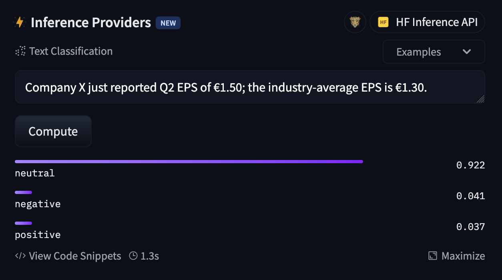
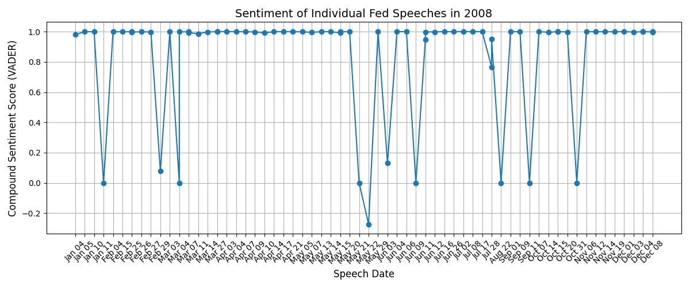
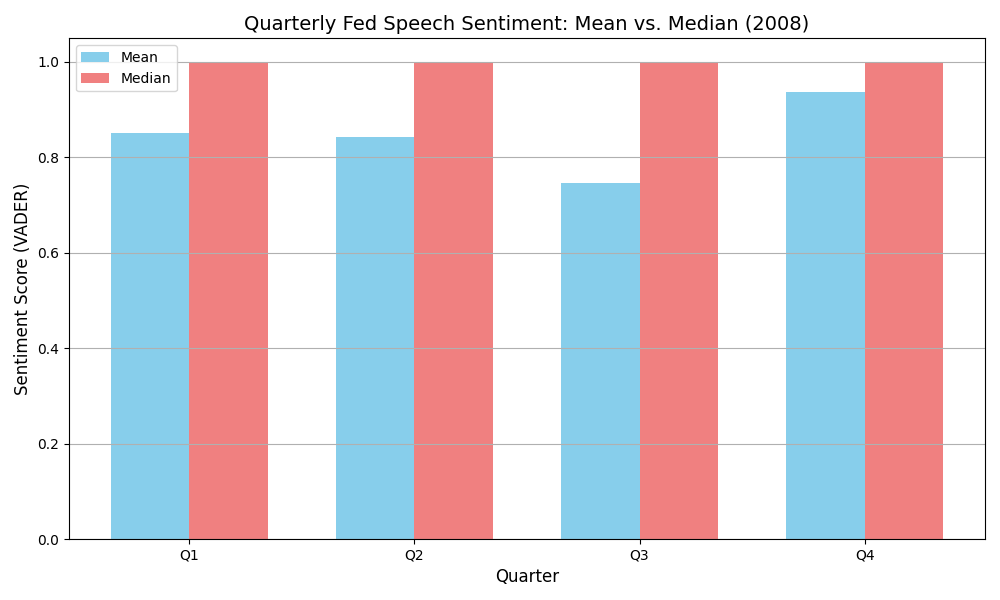
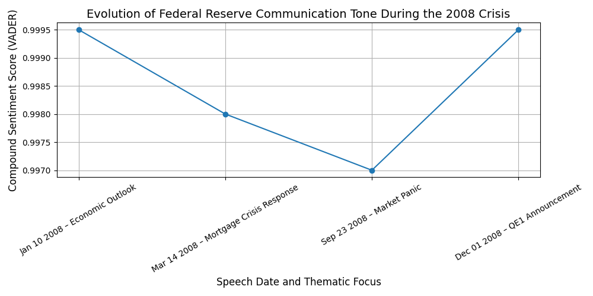
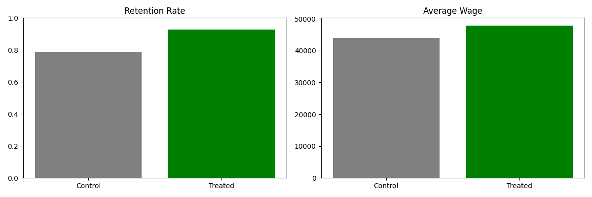
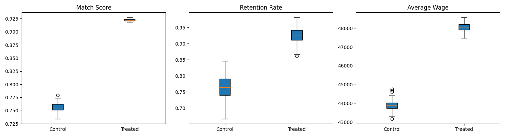
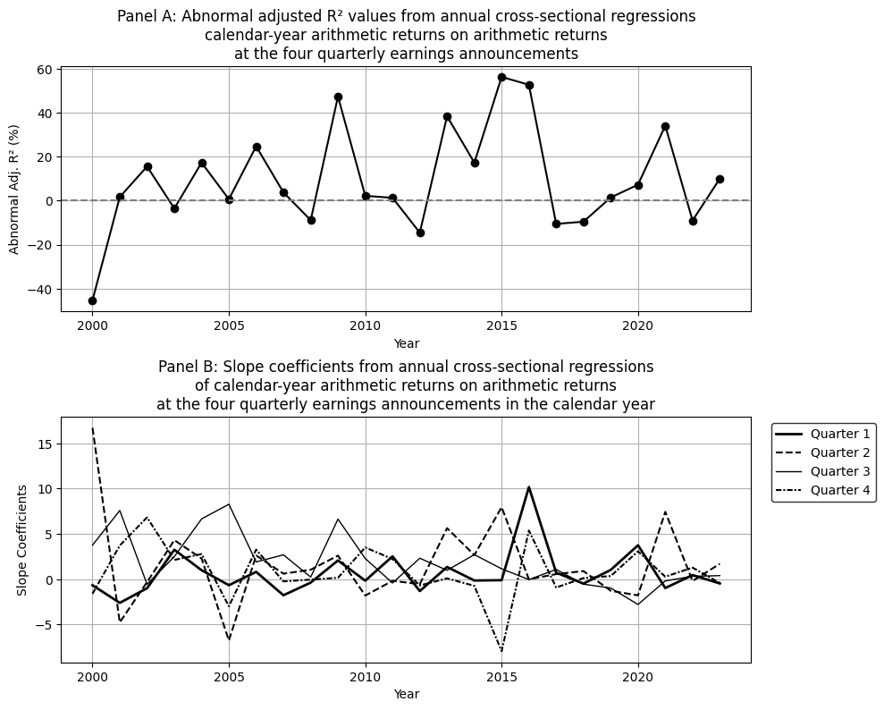
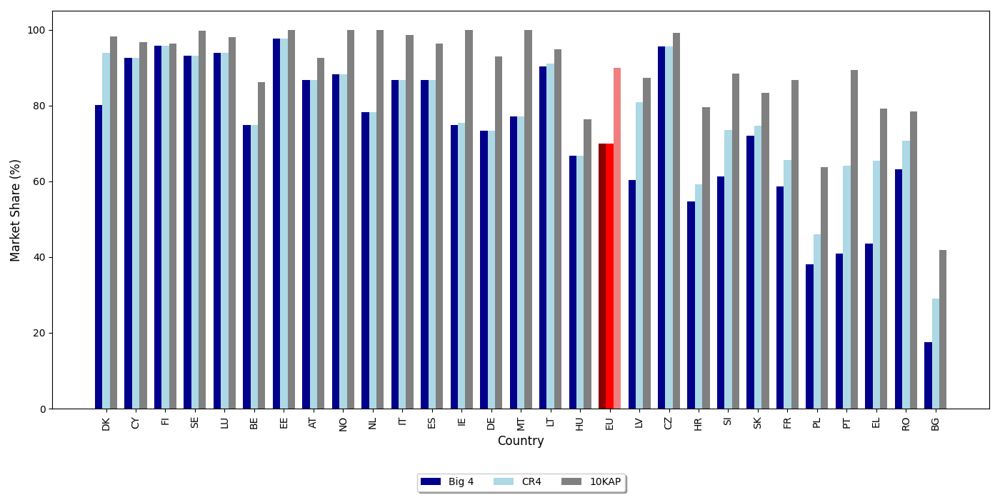
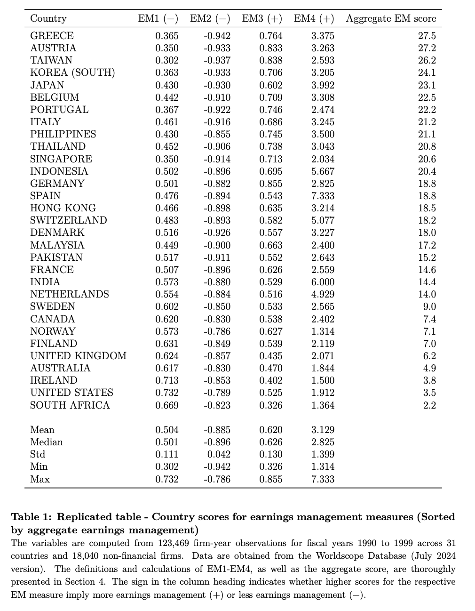

Hi, I'm Melisa!
I am a curious researcher, finance enthusiast, and tech-savvy problem solver.
My academic path has been shaped by the Technical University of Berlin and Humboldt-Universität zu Berlin, where I am completing my M.Sc. in Business Administration with a focus on Finance, Accounting, and Tech.
Professionally, I bring VC experience and several years in finance, accounting, and treasury at a fast-growing startup.
Right now, my Master’s Thesis explores how subtle framing in earnings headlines shapes investor perception, using GPT-5 and FinBERT to simulate market interpretation.
I combine skills in Python and R with ERP and financial analysis experience, turning complex data into clear insights. Academically, I have worked on corporate restructuring cases (M&A, PE, LBOs, and financial distress).
My academic projects are primarily empirical and inspired by reproducibility and transparency principles of
TRR 266. 💻
Besides the projects showcased below, my work ranges from AI-enhanced satellite imagery in institutional lending to an analysis of the British census – examining statistical data collection, inflation-driven costs, and system adaptation under technological and economic change.
On the creative side, I enjoy photography and design in Pixelmator. Check out a liquid-style uni logo animation below!
Let’s connect
and collaborate!
Master’s Thesis · LLM Experiment on Earnings Headlines
How do framing and source credibility affect investor interpretation of earnings news?
Building an LLM experiment with GPT-5 + FinBERT
(via Hugging Face)
on 1,000+ synthetic headlines - contrasting social media (Reddit) with financial press (Wall Street Journal).
First LLM-based thesis in this niche. Highly relevant for large-cap firms: even subtle Big Tech earnings headlines (isolated from sentiment effects) can alter perceived credibility and caution.
Python
Hugging Face
FinBERT
Transparent research

Can thesis writing be simplified and made reproducible for an entire faculty?
Authored an official Quarto/LaTeX template for the
School of Business & Economics at HU Berlin
, also adopted into official submission guidelines. Now widely used across the faculty, saving each student ~20+ hours of formatting work so they focus on research.
Quarto
LaTeX
Reproducible workflows
HU Berlin
Can central bank tone signal crisis severity and policy intent?
Analyzed 70+ Federal Reserve speeches from 2008 with VADER sentiment analysis.
Mapped tone shifts across quarters and policymakers, capturing deliberate use of tone to support credibility and calm markets, with a sharp rebound during the December QE1 announcement.
Methodology is generalizable and may be extended to international central banks (e.g., ECB), and broader macro-financial event detection pipelines.
Conducted at
DIW Berlin
(German Institute for Economic Research).
Python
NLP
Sentiment analysis
VADER
Reproducible research



Can AI recommendations improve job matches – and for whom?
Inspired by Le Barbanchon et al. (2023)
and refined through discussion with the author.
Built a Python simulation to pre-test a proposed U.S. RCT study design.
RCT-style simulation shows higher match quality, retention ≈93% vs 78%, and wages ≈$47.9k vs $44.0k for treated job seekers.
Biggest relative gains for low-skill workers; effects robust across repeated runs.
Highly relevant for fresh graduates entering job markets.
Simulation
RCT-experiment
Synthetic data
Cosine similarity
Subgroup analysis


Do quarterly earnings announcements provide new information or mainly confirm what markets already know?
Replicated and extended Ball & Shivakumar (2008)
across datasets: mapped CRSP/Compustat to Worldscope/Datastream and aligned IDs, dates, and event windows.
Event-study regressions show earnings explain ≈1–2% of annual stock return variation.
Extended analysis to 2007–2023 and to Canada to test robustness across time and markets.
Inspired my Master’s Thesis and contributes to debates on market efficiency and the role of accounting disclosures in investment decisions.
Reproducible research
Cross-database mapping
CRSP / Compustat
Worldscope / Datastream
Event-window analysis

How concentrated is EU auditing - who really signs PIE opinions across countries?
Replicated the EC (2024)
figure using WRDS Audit Analytics Transparency Reports (2021).
Computed Big 4, CR4, and 10KAP shares per country + EU aggregate.
Big 4 exceed ≈80% in 11 Member States; EU-level ≈70% (10KAP ≈90%).
Harmonized network names and duplicates to ensure cross-country comparability.
Useful for competition policy and regulatory debates - where diversification is real vs. where Big 4 dominance persists.
WRDS / Audit Analytics
Big4 · CR4 · 10KAP
HHI / market shares
Reproducible research

Does P/B embed expectations about future residual income under clean-surplus logic?
Computed deflated residual income with a constant 8% cost of equity and grouped firms into 20 P/B buckets (trimmed P/B ≤ 7).
Replicates Penman-style patterns:
high P/B → higher near-term residuals that mean-revert; low P/B → persistently negative residuals.
Practical for screening and valuation cross-checks.
Worldscope
Residual income
P/B grouping
Reproducible research
Do stronger investor rights curb earnings management across countries?
Replicated Leuz–Nanda–Wysocki (2003) on Worldscope (1990–1999).
31 countries · 18,040 firms · 123,469 firm-years.
Rebuilt EM1–EM4 plus aggregate score; country ranks closely match the original.
Patterns hold: weaker protection → more smoothing, larger accruals, loss avoidance.
Benchmark for cross-country disclosure risk and governance screens.
Worldscope
Investor protection
Cross-country
Reproducible research
Key definitions used to build EM1–EM4 and the aggregate score:
\[
Accruals_t = (\Delta CA_t - \Delta Cash_t) - (\Delta CL_t - \Delta STD_t - \Delta TP_t) - Dep_t
\]
\[
CFO_t = OI_t - Accruals_t
\]
EM1 (Volatility ratio): median across firms (by country) of the ratio of scaled standard deviations:
\[
EM1_c = \text{median}_{i \in c} \left( \frac{\sigma(OI_i)/TA_{i,t-1}}{\sigma(CFO_i)/TA_{i,t-1}} \right)
\]
EM2 (Accruals–CFO comovement): country-level Spearman correlation between scaled changes:
\[
EM2_c = \rho_c \left( \frac{\Delta Accruals}{TA_{t-1}}, \frac{\Delta CFO}{TA_{t-1}} \right)
\]
EM3 (Absolute accruals intensity): median across firms (by country) of:
\[
EM3_c = \text{median}_{i \in c} \left( \frac{|Accruals_i|}{|CFO_i|} \right)
\]
EM4 (Small profits / small losses): ratio of counts where \( NE/TA_{t-1} \) is “small”:
\[
0 \leq \frac{NE}{TA_{t-1}} \leq 0.01 \quad \text{(small profit)}, \qquad -0.01 \leq \frac{NE}{TA_{t-1}} < 0 \quad \text{(small loss)}
\]
\[
EM4_c = \frac{\#\{\text{small profits}\}_c}{\#\{\text{small losses}\}_c}, \quad \text{computed only if } \#\{\text{small losses}\}_c \geq 5
\]
Aggregate EM score: average of the country ranks of the four metrics:
\[
AggEM_c = \frac{1}{4} \left( \text{rank}(EM1_c) + \text{rank}(EM2_c) + \text{rank}(EM3_c) + \text{rank}(EM4_c) \right)
\]
